Liberman
Красиво — это минимум.
Дальше начинается работа.
01 (задача)
Почему именно Илона?
Задача была не просто сделать красивый сайт дизайнера интерьера, а показать, почему среди множества сильных специалистов клиент должен выбрать именно Илону.
Кристина · голосовой комментарий к кейсуСайт в этой логике рассказывает не о студии, а о клиенте: с какой болью он пришёл и как её закроют. У сайта три аудитории, и у каждой своё сомнение:
- Хозяйка квартирыбоится переделок
- Сомневающийсяне доверяет вкусу
- Инвесторсчитает деньги
02 (research) до дизайна
Не с визуала. С анализа
Сначала анализ аудитории, конкуренты и стратегия. И только потом это превращается в структуру и дизайн сайта.
Первым документом стало досье: портрет Илоны по её Instagram (хайлайт About me, посты, подписи к проектам) и Threads, разбор двух сильных бюро‑референсов — lepobureau.ru и poisk‑bureau.com — и черновик структуры лендинга.
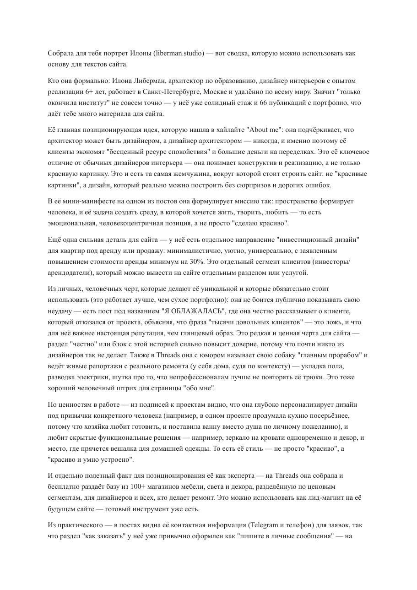
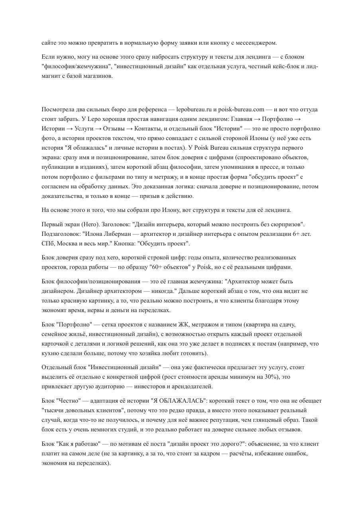
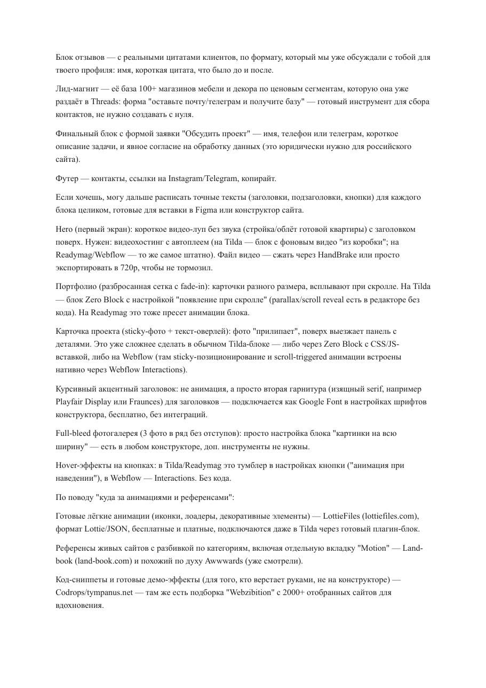
рабочий документ · досье и черновик структуры, август 2026
находка хайлайт «About me»
«Архитектор может быть дизайнером, а дизайнер архитектором — никогда».
Отсюда её клиенты экономят «бесценный ресурс спокойствия» и большие деньги на переделках.
что взяли из досье
03 (strategy) позиционирование
Архитектор, а не ещё один дизайнер
Илону продаём не как очередного дизайнера интерьера, а как архитектора. Дизайнер видит красивую картинку из Pinterest, архитектор — что здесь несущая стена, а здесь вентиляционное отверстие. Поэтому с Илоной ремонт доводится до конца с минимальным количеством правок и переделок.
Архитектор может быть дизайнером.
Дизайнер архитектором — никогда.
блок «Философия» на сайте · отрицание работает как фильтр
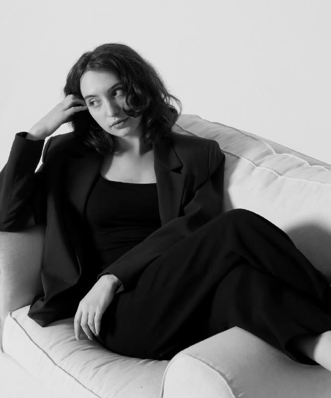
04 (ux) воронка продаж
Холодного человека — по всему сайту
Воронка тоже строится до дизайна. Классическая AIDA: показать УТП, закрыть боли, вызвать желание проектами и стоимостью, дать бесплатную пользу и закончить призывом. На каждом этапе клиент теряется, если этап не докручен.
- ВниманиеПрелоадер и первый экран останавливают«Красиво — это минимум. Дальше начинается работа»
- ИнтересФилософия закрывает главное возражениеАрхитектор видит то, что дизайнер не увидит никогда
- ЖеланиеПортфолио, инвестдизайн, цены, отзывыКаждая аудитория видит свою задачу и свою цифру
- ДействиеЛид‑магнит и форма с тремя полямиДля тех, кто ещё выбирает, и для тех, кто уже готов
- СделкаКлиент приходит подготовленнымЗнает, кто Илона, чем отличается и сколько стоит
«Если у вас где‑то человек отваливается на этом этапе — всё, конверсия вашего сайта падает».
Кристина · из видеоразбора кейса
05 (content) боли аудитории
Каждый страх — экран сайта, а не абзац текста
Если провести человека по этому пути и закрыть все его боли, неважно, насколько выше цена: он купит именно здесь, потому что почувствует себя в безопасности.
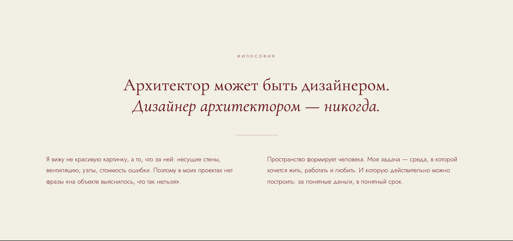
блок «Философия»: ответ на вопрос «зачем архитектор»
06 (trust) обо мне и проекты
Работы говорят за неё
обо мнеПроектирую под привычки, а не под тренды
Вместо регалий — живые детали из её практики: кухня серьёзнее, потому что хозяйка любит готовить; ванна вместо душа, потому что человек читает в ванной; зеркало у кровати, за которым прячется вешалка. И «главный прораб» — собака, которая спит на мешках с гипсокартоном.
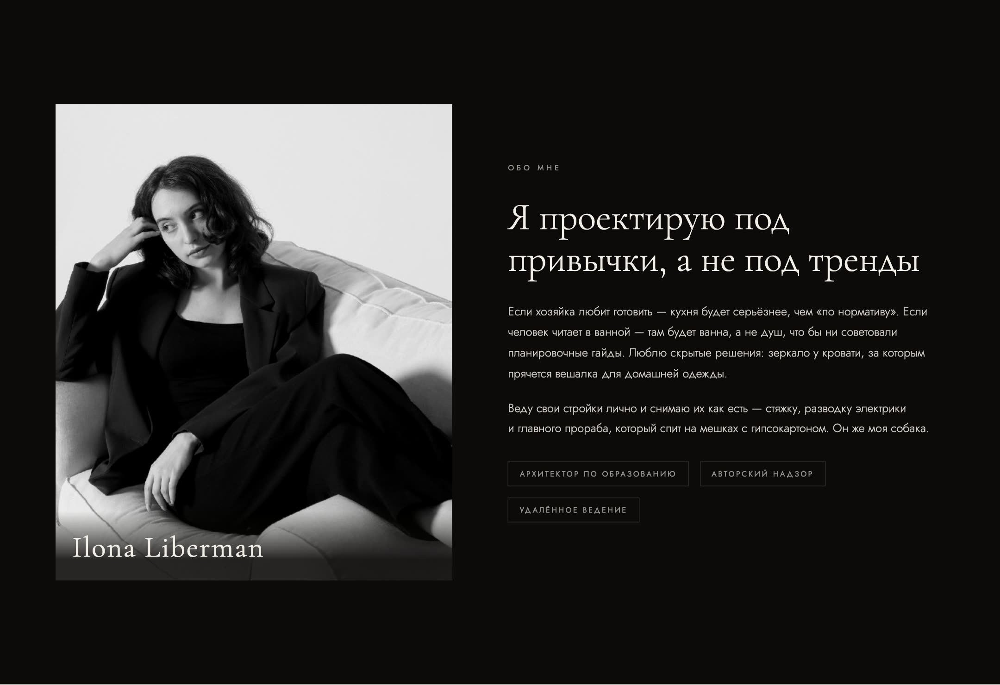
портфолиоНе набор красивых интерьеров
Портфолио здесь подтверждает всё, что сайт до этого рассказал о специалисте. Сетка проектов с типом помещения и метражом, фильтр «Жильё / Инвестдизайн» — каждая аудитория сразу находит своё.
07 (desire) инвестдизайн и цены
Инвестору — цифры, хозяйке — смету
отдельная услугаИнвестиционный дизайн
Квартира под аренду или продажу — «так, чтобы понравилось не вам, а рынку». Раздел говорит на языке инвестора: минимум 30% к арендной ставке по объектам Илоны и 6 недель на проект.
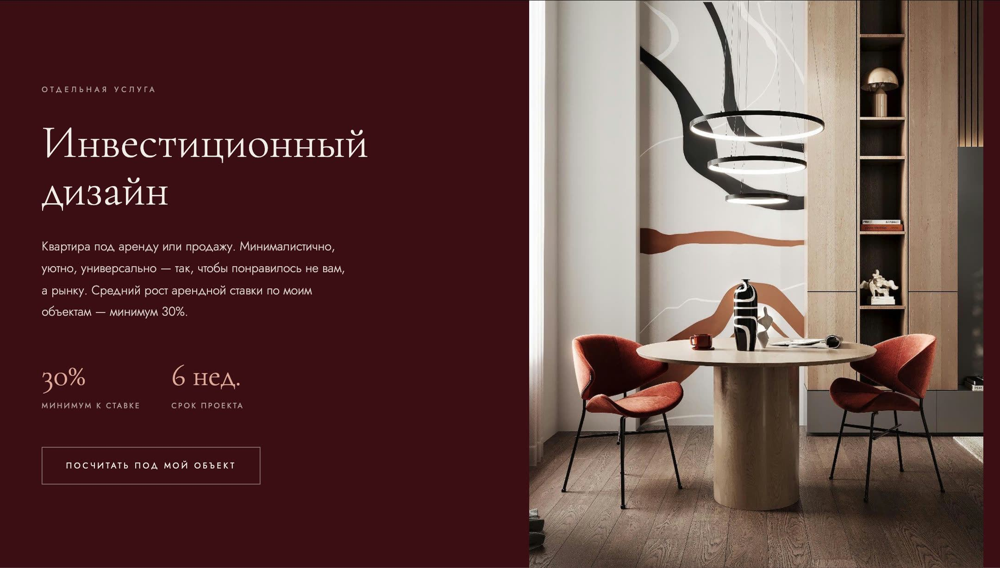
услуги и стоимостьТри формата — от консультации до стройки
Цены открыты: консультация, экспресс‑проект и полный дизайн‑проект, плюс два формата авторского контроля. В состав проектов прямо вписаны чертежи и файл‑смета со ссылками — ответ тем, кто боится сюрприза на стройке.
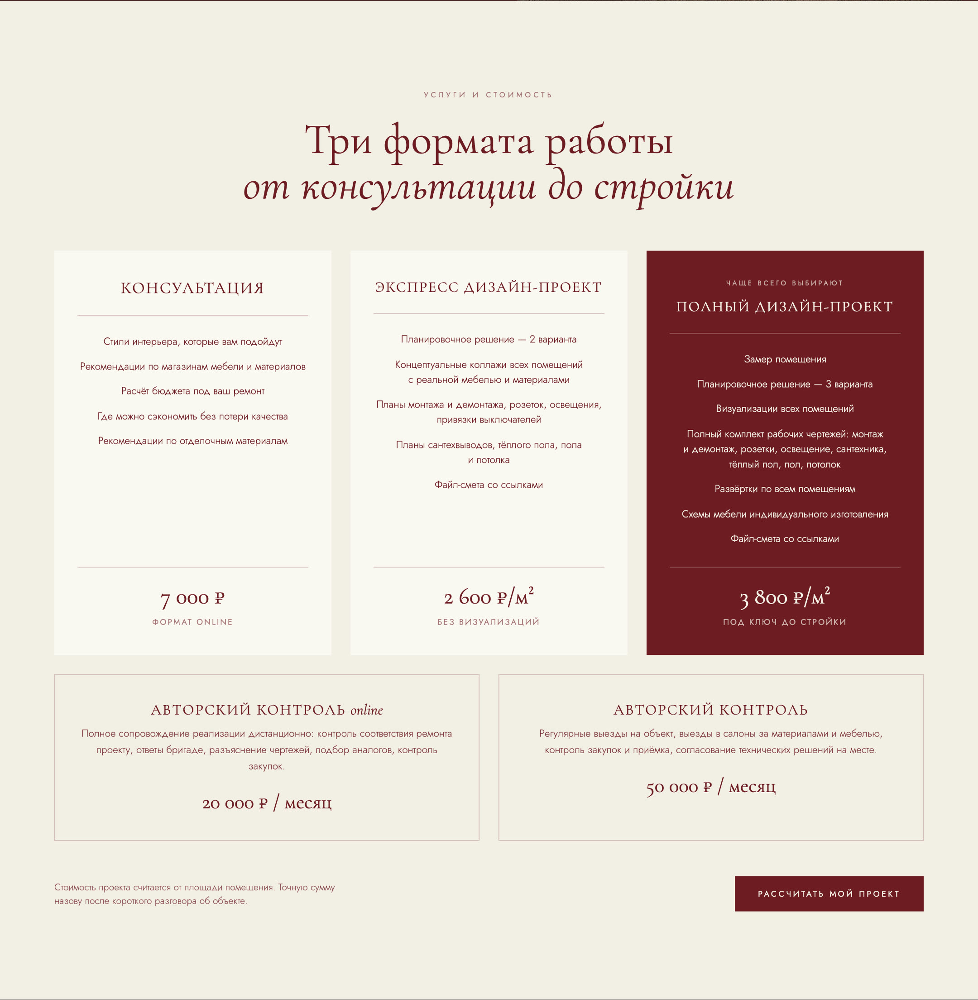
08 (action) отзывы, лид‑магнит, заявка
Не купил сейчас — купит потом
отзывыКаждый бьёт в боль своей аудитории
Отзывы добавляют то, чего не может дать портфолио: подтверждают опыт реальных клиентов и снимают сомнения перед финальным обращением. Три отзыва подобраны под три аудитории: хозяйку квартиры, сомневающегося и инвестора.
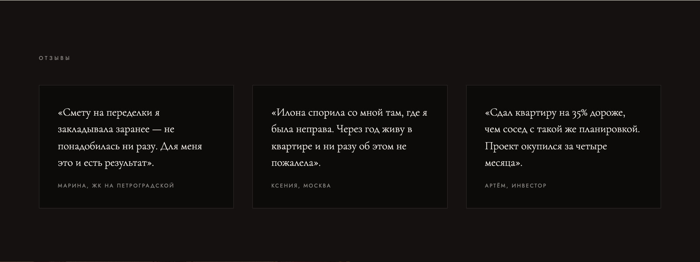
лид‑магнитБаза 100+ магазинов мебели и декора
Для тех, кто заинтересовался, но ещё не готов. Лид‑магнит нужен во всех нишах с высоким чеком, где клиента надо прогреть: человек закрыл вкладку, а его контакт остался у Илоны — тёплая база вместо трафика, ушедшего навсегда.
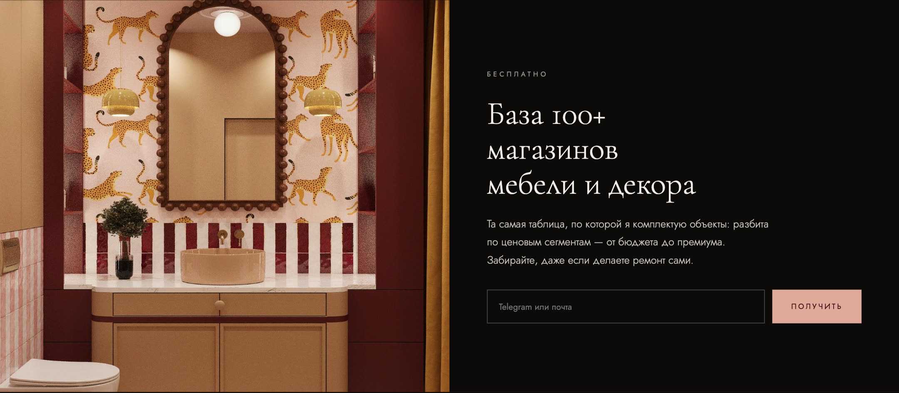
заявкаТри поля и мессенджеры
Для тех, кто уже готов: имя, телефон или Telegram, пара слов о задаче — и согласие на обработку данных. Рядом — Telegram, WhatsApp, MAX и телефон для тех, кому проще написать самому.
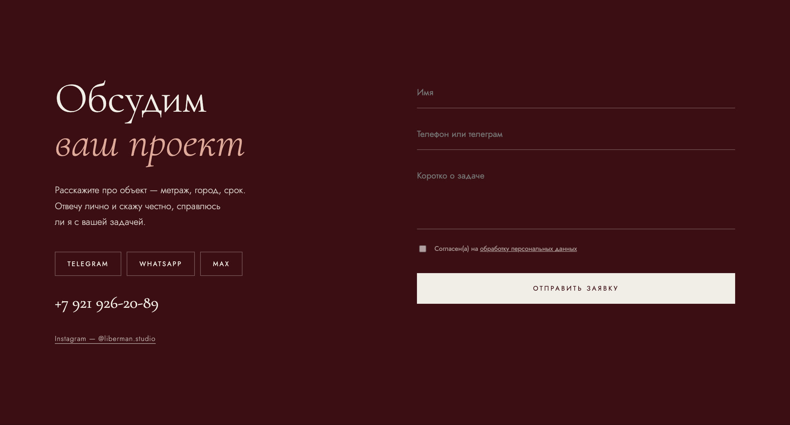
09 (responsive) мобильная версия
Та же система — на любом экране
Cormorant Garamond и fluid‑типографика без брейкпоинтов: заголовки плавно масштабируются от широкого монитора до телефона. Портфолио на телефоне листается карусель‑лентой, тарифы встают в колонку, навигация прячется в меню.
проход по сайту
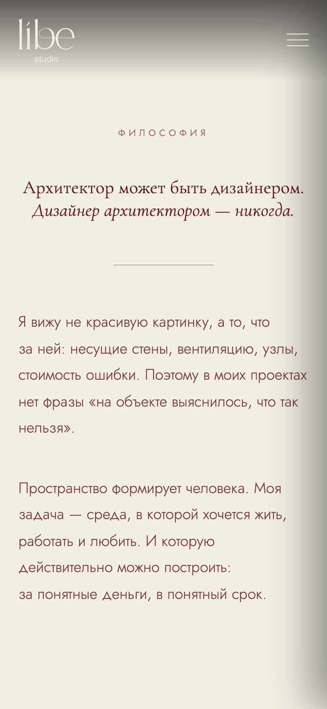
философия
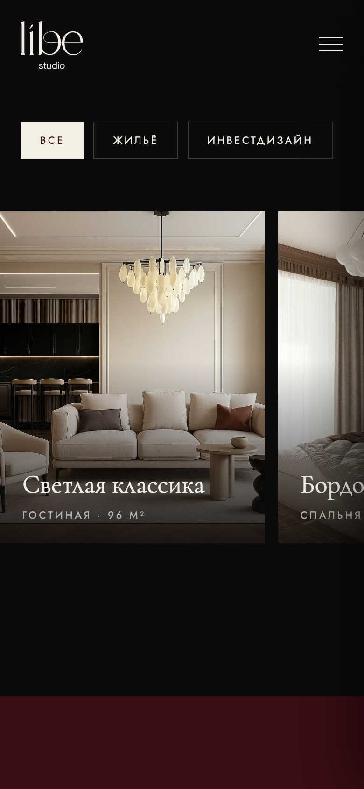
проекты
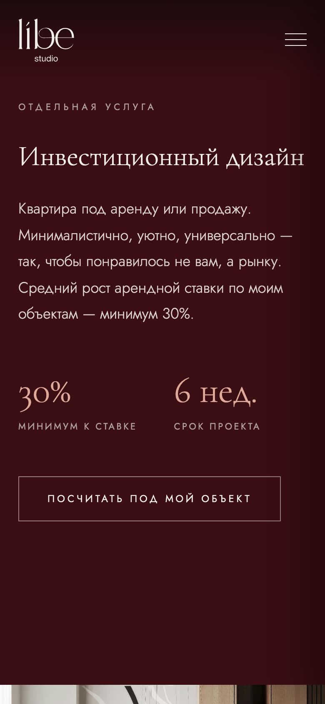
инвестдизайн
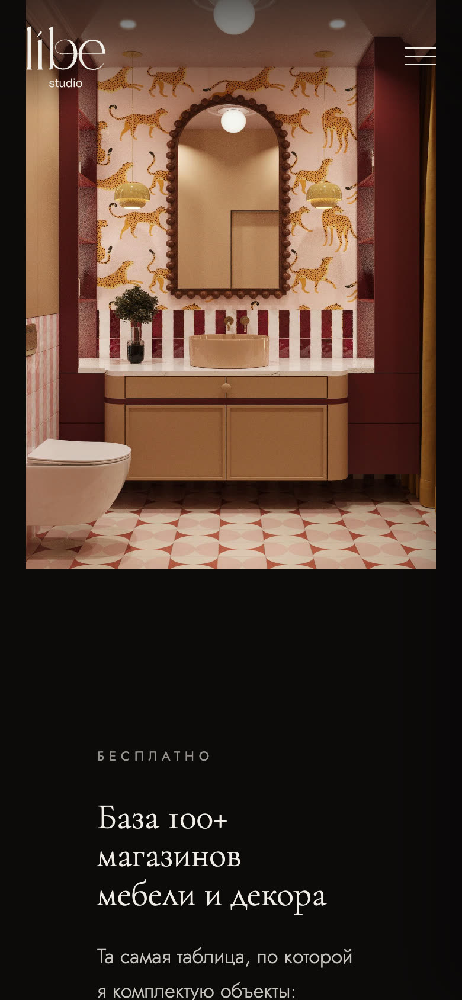
лид‑магнит
10 (visual) визуальный язык
Не очередной бежевый сайт
Хотелось сохранить премиальность, но не делать очередной бежевый сайт интерьерного дизайна, которых просто миллион. Поэтому — молочный, глубокий бордо, чёрный и крупная редакционная типографика.
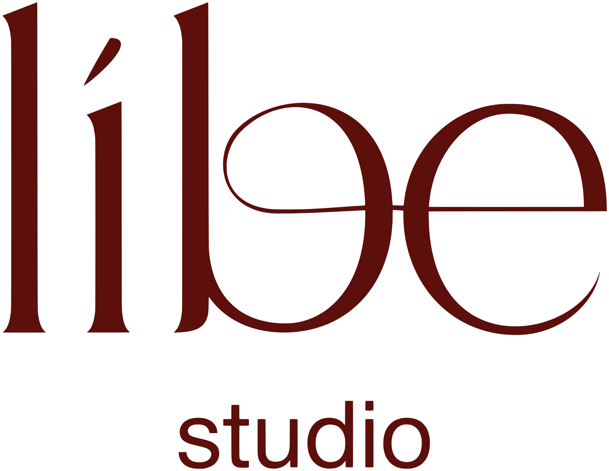
логотип líbe studio · на тёмном и на молочном
фон
текст
бордо
бордо тёмное
пудровый
Ни одного отклонения по всему сайту — это дисциплина.
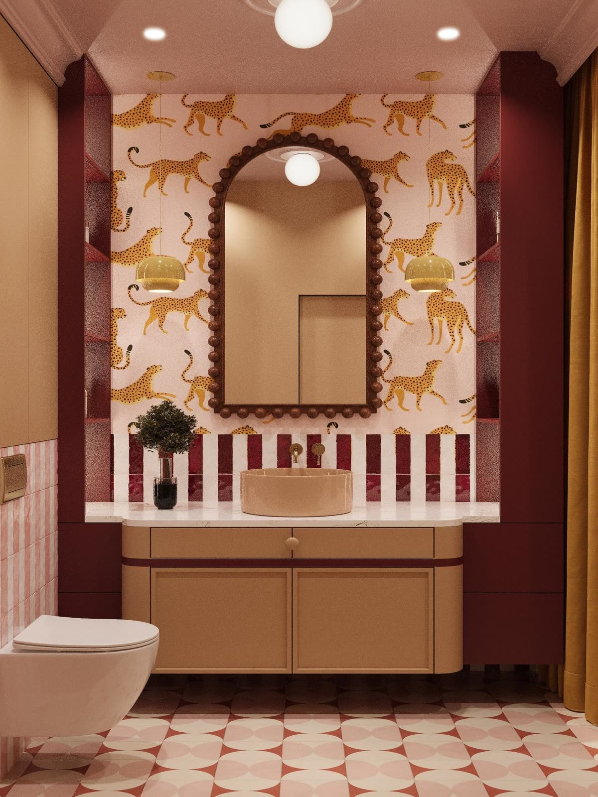
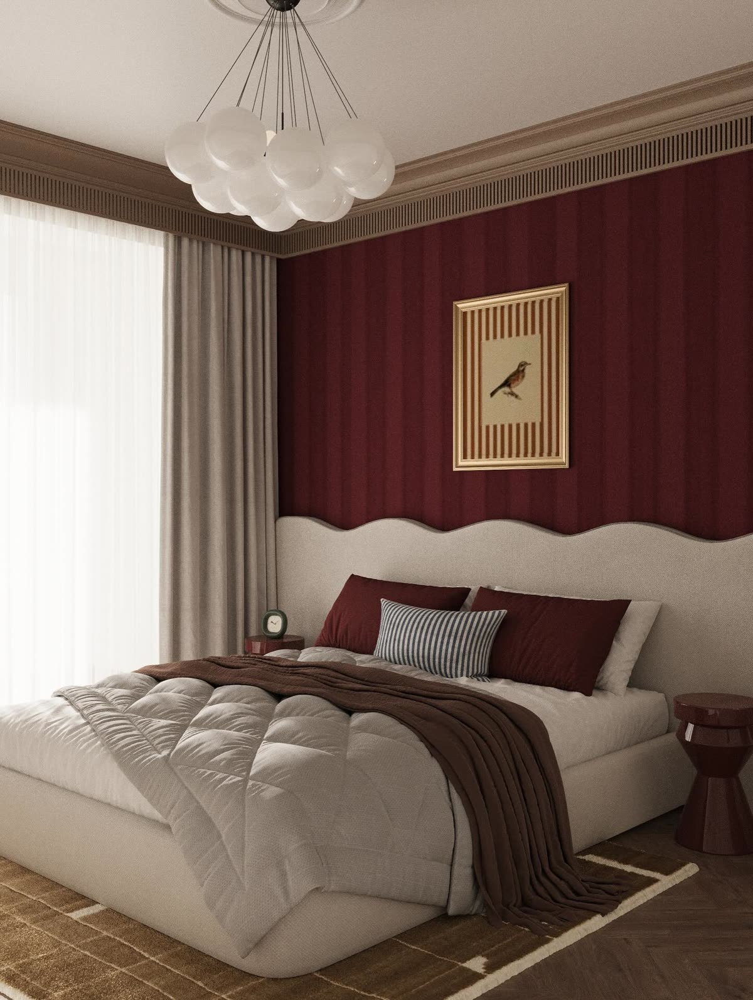
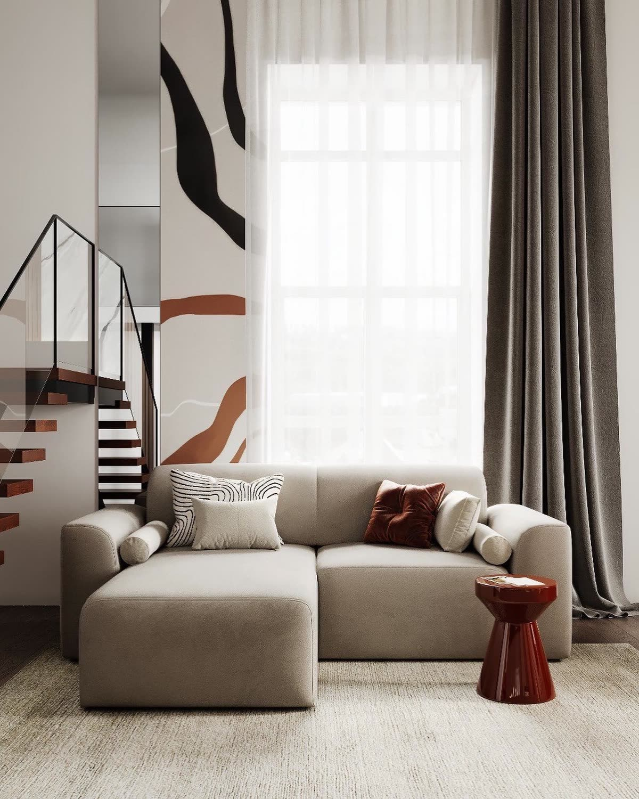
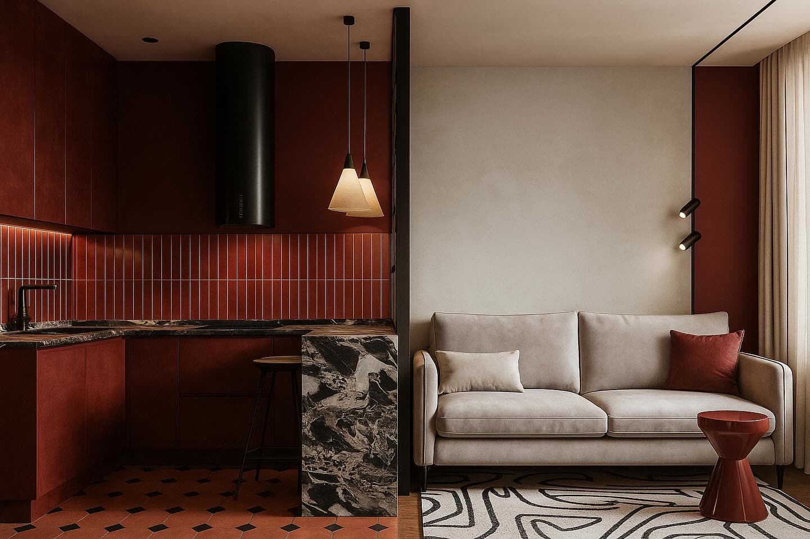
визуализации проектов Илоны из портфолио на сайте — бордо в палитре сайта перекликается с её интерьерами
11 (scope) что было сделано
Восемь этапов — одна система
- 01Маркетинговый анализ ниши и конкурентов
- 02УТП и позиционирование
- 03Брендинг и визуальная концепция
- 04Воронка продаж по AIDA
- 05Лид‑магнит для захвата аудитории
- 06Дизайн в Figma и вёрстка на чистом коде
- 07SEO: мета‑теги, семантика, schema.org
- 08GEO: ChatGPT, Perplexity и Google AI знают, кто Илона
12 (result) результат
Согласовали почти без правок
Илона Либерман, архитектор · сообщение после показа макета
Согласовать макет у человека с насмотренностью и вкусом — для меня высшая награда.
Кристина, TINA DIGITAL
13
Не просто красивый сайт.
Маркетинговая система.
За визуалом стоит система, которая объясняет ценность специалиста и ведёт клиента к решению. Только такой сайт даёт конверсию и результаты продвижения, а не слитый бюджет.